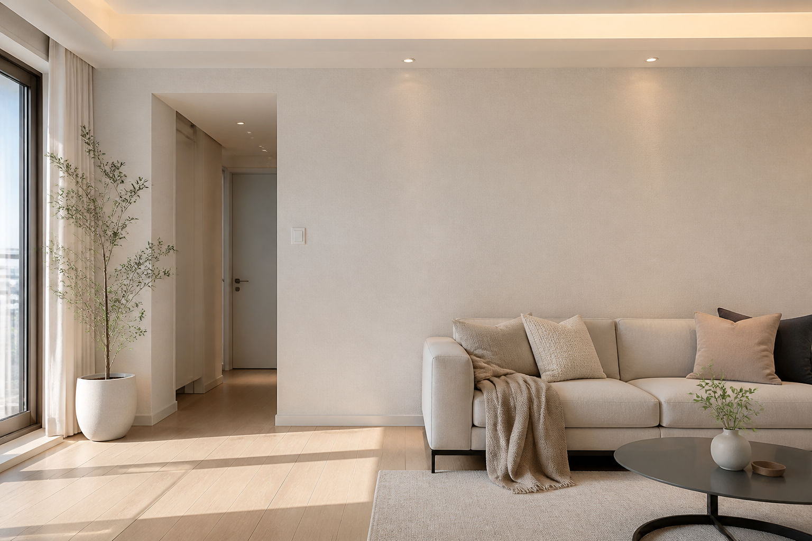
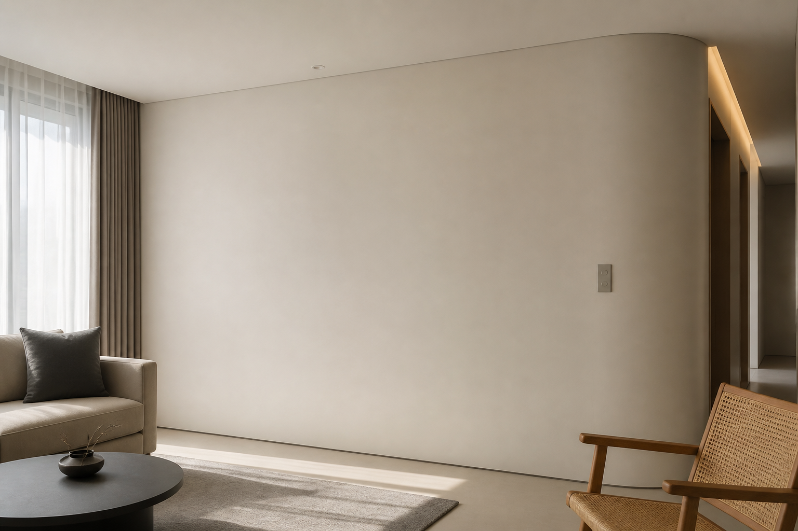
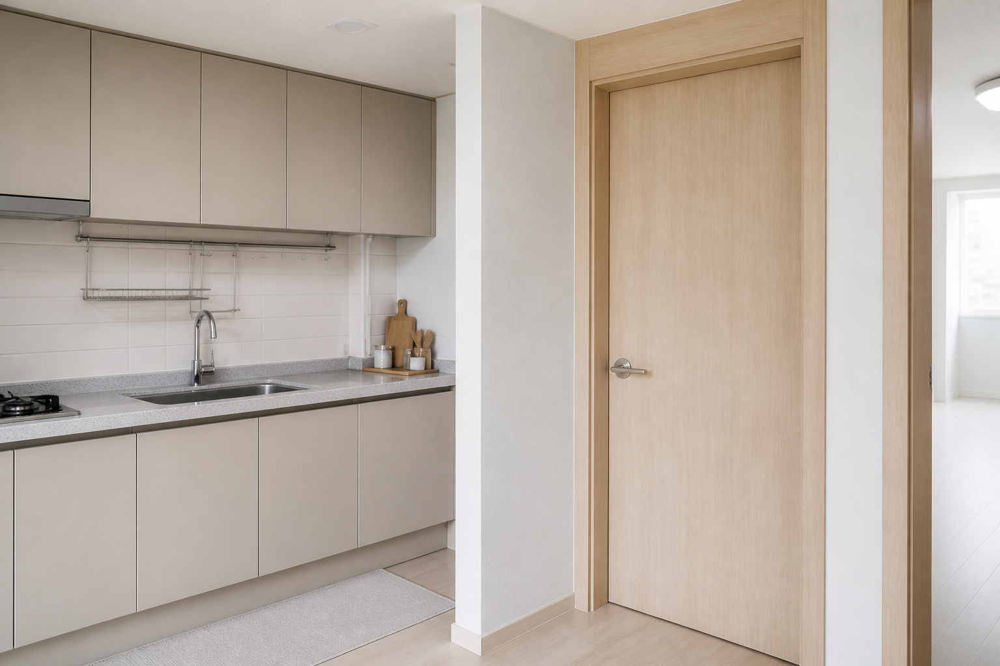

WALLPAPER
벽지
넓은 벽을 빠르게 마감가격 선택 폭과 시공성이 좋아 국내 아파트 전체 벽에 가장 현실적입니다.
- 빠른 시공과 다양한 질감
- 이음매·모서리 손상 가능
- 거실·침실·천장 추천



벽에는 벽지, 면에는 페인트, 가구와 문에는 필름.
필요하면 세 가지를 섞어서 사용합니다.
가격 선택 폭과 시공성이 좋아 국내 아파트 전체 벽에 가장 현실적입니다.
색상과 광택의 자유도가 높고 곡면에도 적합하지만 바탕 면 정리가 중요합니다.
철거를 줄이며 문·문틀·주방가구의 색과 질감을 바꾸는 데 강합니다.
벽의 흡수 차이와 균열이 마감면에 드러나지 않도록 철거·보수·초배 범위를 견적서에 기록합니다.


특히 페인트와 필름은 퍼티·샌딩·프라이머와 숙련 인건비가 큰 비중을 차지할 수 있습니다.
넓은 면적을 안정적으로 마감
질감은 벽지, 매끈함은 페인트
철거 없이 색과 무늬를 변경
 주방가구인테리어필름
주방가구인테리어필름도어 상태가 좋을 때 부분 리폼
깊은 질감 중심의 프리미엄과 가격·품질 균형형을 공간별로 비교합니다.
문·몰딩·주방가구의 표면 상태와 패턴, 모서리 시공 방법을 확인합니다.
바탕 종류, 하도·상도 횟수, 광택과 건조 조건은 제품 시방서를 기준으로 합니다.
바꿀 위치와 중요한 기준을 선택해보세요.
적합한 마감재와 확인할 공정을 함께 안내합니다.
공간 사진을 보내주시면 부위별 마감재, 시공 범위와 예상 견적을 연결합니다.
AI 인테리어 시안 보기예상 견적 보기